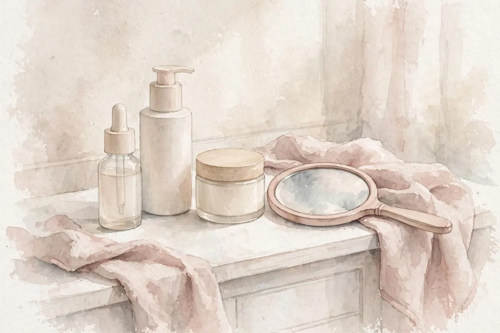

トップ ＞ スキンケア ＞ Tゾーン・Uゾーンで分けるケアの考え方
Tゾーン・Uゾーンで分けるケアの考え方

施術の仕事をしていると、お客様から「同じ化粧水なのに、額はべたつくのに頬はつっぱる気がする」と聞かれることがあります。顔は一枚の面に見えますが、触れてみると場所ごとに感触が違います。額と鼻筋の「Tゾーン」と、頬とあごの「Uゾーン」では、肌の感触も、触れたときのすべりも、汗や皮脂の出方も違います。この記事では、顔を部位で分けて考える方法を整理します。特定の商品の話ではなく、量と順番の分け方の考え方です。
TゾーンとUゾーン、何が違うのか
Tゾーンは額から鼻筋にかけての、アルファベットのTの形をした範囲です。Uゾーンは両頬からあごにかけての、Uの字の範囲です。Tゾーンは皮脂の出方が多いとされる場所で、触るとすべりやすく、べたつきを感じやすいと言われます。Uゾーンはそれに比べて皮脂の出方が少なく、乾燥を感じやすい場所とされています。もちろん個人差は大きく、季節や体調でも変わりますが、「場所ごとに感触が違う」という前提で見ると、ケアの分け方が考えやすくなります。
私が施術で顔に触れるときも、まずTゾーンとUゾーンの感触の違いを確認します。同じ手のひらで触れても、額はつるりとすべり、頬は少しひっかかる感じがする、という違いがあります。この違いは、化粧水や乳液をつけるときの量の分け方にもつながります。顔全体を同じ量で済ませるのではなく、場所ごとに分ける、というのが現場の考え方です。
量と順番を部位で分ける
量の分け方は、まず「多い場所と少ない場所」を決めることから始めます。Tゾーンはべたつきやすい場所なので、化粧水は全体に使っても、乳液やクリームは薄めに、という分け方がひとつの型です。Uゾーンは乾燥を感じやすい場所なので、化粧水を重ねる回数を増やしたり、クリームを少し多めにしたりする分け方があります。どちらも「全体の量を変える」のではなく、「場所ごとの配分を変える」という考え方です。
順番の分け方もあります。化粧水をつけるときは、まずUゾーンからつけて、Tゾーンはあとから、という順番にすると、乾燥を感じやすい場所にしっかり行き渡ります。逆に、べたつきが気になる日は、Tゾーンを先に軽くつけてから、Uゾーンを重ねる、という順番もあります。順番に決まりはありません。自分の顔の感触に合わせて、「先にしっかりつけたい場所」を決めるのが基本です。
テクスチャーの使い分けも、部位で分ける考え方のひとつです。同じシリーズでも、さっぱりした使用感のものと、しっとりした使用感のものがある場合、Tゾーンにはさっぱりしたものを、Uゾーンにはしっとりしたものを、という使い分けが考えられます。ただし、使い分けをすると手持ちのアイテムが増えるので、まずは「量の配分」から始めて、それでも足りない場所があれば使い分けを考える、という順番が無理のない進め方です。
季節や時間帯で分け方を変える
部位の分け方は、季節でも変わります。湿度の高い季節は、Tゾーンのべたつきが気になりやすくなります。その時期は、Tゾーンの量をさらに控えめにして、Uゾーンだけ普段通りにする、という調整が考えられます。反対に、空気が乾く季節は、Uゾーンの乾燥感が強くなります。その時期は、Uゾーンの重ねる回数を増やして、Tゾーンは普段通りにする、という調整です。季節の変わり目は、分け方を見直す機会です。
朝と夜でも、分け方を変える方法があります。朝はそのあとのメイクや日中の過ごし方があるので、Tゾーンは軽めにしておきたい、という人が多くいます。夜は時間に余裕があるので、Uゾーンをゆっくり重ねる、という分け方です。朝と夜で役割を分けると、一日の合計のバランスが取りやすくなります。どちらも、顔全体を同じように扱うのではなく、場所と時間で分ける、という同じ考え方です。
分け方の見直しは、鏡の前で自分の顔を触って確認するのが一番です。額、鼻筋、頬、あごを順に触れて、今日の感触を確かめてください。べたつきやすい場所、つっぱりを感じる場所が、昨日と違うこともあります。肌の状態で気になることが続く場合は、皮膚科などの専門家に相談してください。この記事は部位で分ける考え方の案内であり、商品ごとに表示がある場合は、そちらが優先です。
セラフィナ「顔は一枚じゃないんだね。場所ごとに分けて考えるのが、量と順番のコツだよ」

セラフィナ｜美容の道具箱の案内役
「量と表示が分かれば、美容は失敗しない。」——セラフィナと白猫のモコが、買う前のチェックポイントを案内します。綺麗になりたい気持ちに正直に、でも表示は冷静に読むのが、このサイトの約束です。